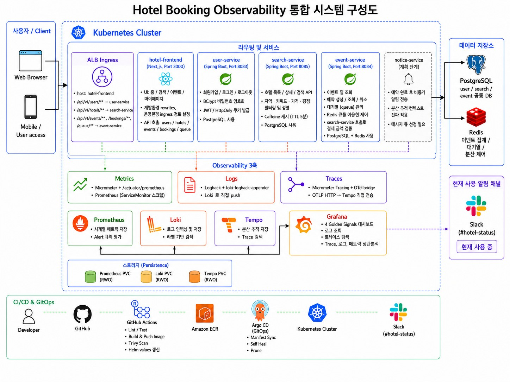

Build → Scan → Deploy → Observe → Alert를 하나의 운영 흐름으로 연결했다.
AWS EKS · TERRAFORM · GITHUB ACTIONS · ARGOCD · OBSERVABILITY
Hotel Booking · GitOps & Observability
특가 오픈 순간 트래픽이 몰리는 호텔 예약 MSA를 EKS에 배포하고, push 한 번으로 dev/prod까지 이어지는 배포 흐름을 만들었다.

01
프로젝트 개요
특가 오픈처럼 짧은 시간에 요청이 몰리는 상황에서도, 배포는 사람 손을 타지 않고 장애는 한 화면에서 찾을 수 있는 운영 환경을 목표로 했다.
Next.js 프론트엔드와 Spring Boot 4개 서비스(회원 · 검색 · 예약 · 알림)로 구성된 호텔 예약 MSA를 AWS EKS에 올렸다. 팀장이자 인프라 · CI/CD 담당으로 Terraform 기반 EKS 구성, GitHub Actions CI, Helm Chart, ArgoCD GitOps 배포와 dev/prod 환경 분리를 맡았다. 팀원은 대기열 · 재고 로직과 분산 추적(MSA 개발), 메트릭 · 로그 · 알림(Observability 스택)을 담당했다.
클러스터부터 배포 파이프라인, 환경 분리까지 서비스가 올라가는 경로 전체를 담당했다.
브랜치(joon / main), Namespace, Helm values 파일로 환경을 나눴다.
특가 트래픽과 서비스 중단 상황에서 정합성, 알림, 복구 흐름을 확인했다.
02
배포 흐름
GitHub Push변경 서비스 감지
→
GitHub ActionsTest · Build · Trivy
→
Amazon ECR7자리 SHA Tag
→
Helm valuesyq로 Tag 갱신 · 커밋
→
ArgoCDAuto Sync · selfHeal
→
EKSdev / prod Namespace
03
내 역할
terraform-aws-modules/eks로 t3.medium 노드 그룹(3대, 1~4대)과 IRSA를 구성하고, Access Entry로 팀원 권한을 부여했다. ArgoCD도 Terraform Helm Release로 함께 설치했다.
paths-filter로 바뀐 서비스만 골라 Matrix를 만들고, 백엔드는 Postgres · Redis 서비스 컨테이너를 띄워 Gradle 테스트, 프론트엔드는 npm 빌드를 실행했다.
이미지를 로컬에 먼저 빌드하고 HIGH · CRITICAL 취약점이 있으면 실패시켜, 검사를 통과한 이미지만 ECR에 올라가도록 했다.
CI가 이미지 Tag를 Helm values에 커밋하면 ArgoCD가 감지해 배포한다. App of Apps(root-dev / root-prod)와 prune · selfHeal로 클러스터를 Git 상태에 맞췄다.
prod 파이프라인은 helm lint와 렌더링 후 namespace: dev, targetRevision: joon, 빈 값이 섞여 있으면 실패하도록 해 dev 설정 유입을 막았다.
단일 hotel Chart에서 serviceDefaults를 서비스별 값과 병합했다. HPA(2~5, CPU 70%), 무중단 Rolling Update(maxUnavailable: 0), ALB Ingress 경로 라우팅을 공통으로 적용했다.
04
트러블슈팅
ALB 환경에서 로그인 후 401 반복
| 증상 | EKS에 배포한 뒤 로그인 API는 성공하지만, 이후 인증이 필요한 요청에서 401이 반복됐다. |
|---|---|
| 원인 | JWT 쿠키에 Secure 속성이 붙어 있었는데 ALB가 HTTP로만 열려 있어, 브라우저가 쿠키를 저장하지 않았다. |
| 해결 | Secure 적용 여부를 환경 변수(COOKIE_SECURE)로 분리하고, 환경별 Helm values에서 값을 주입하도록 변경. |
| 결과 | ALB를 통한 로그인 후 쿠키가 정상 저장되고, 마이페이지 · 예약 API가 401 없이 동작 |
초기화 전 Liveness Probe로 Pod 반복 재시작
| 증상 | 배포 직후 Spring Boot Pod가 준비되기 전에 재시작을 반복했다. |
|---|---|
| 원인 | 애플리케이션 초기화가 끝나기 전에 Liveness Probe가 실패로 판정했다. |
| 해결 | Chart 공통값에서 initialDelaySeconds를 45초, failureThreshold를 6으로 올려 초기화 시간을 확보. |
| 결과 | 시작 중 불필요한 재시작이 줄고, 배포 후 Pod가 안정적으로 Ready 상태에 도달 |
클러스터에서 API 호출 실패 (CORS · 경로)
| 증상 | 로컬에서는 동작하던 프론트엔드 API 호출이 EKS 환경에서는 실패했다. |
|---|---|
| 원인 | 서비스마다 CORS 설정이 흩어져 있었고, 프론트엔드가 로컬 서비스 주소를 직접 호출하고 있었다. |
| 해결 | CORS 설정을 공통화하고 API 호출을 상대경로로 바꾼 뒤, ALB Ingress에서 /api/v1/* 경로별로 서비스에 라우팅. |
| 결과 | 대기열(/api/v1/queue)을 포함한 API가 Ingress를 통해 정상 전달되어, 로컬과 클러스터 양쪽에서 동작 |
05
검증 결과
배포한 환경 위에서 특가 트래픽과 장애 상황을 실제로 재현해 확인했다.
재고 30개 특가에 1,000명이 동시에 구매하는 상황을 K6로 재현했다. 대기열 슬롯 미반납, 토큰 발급 경쟁 상태 같은 병목은 팀원이 수정했고, 최종 테스트에서 정합성 목표는 충족했다. 다만 전체 요청 p95는 239ms로 목표(200ms)에 닿지 못했다. 장애 주입은 event-service Replica를 0으로 줄여 Slack ServiceDown 알림과 복구 후 RESOLVED 알림을 확인했고, ArgoCD에서 hotel-prod가 Synced · Healthy로 유지되는 것을 확인했다.
LOAD TEST오버셀 0건
1,000 VU · 재고 30 · checks 100%
ERROR시스템 오류 0%
매진(409)은 정상 응답으로 분리
DEPLOY5개 서비스 · 2개 환경
push 한 번으로 dev / prod 자동 배포
06
회고
로컬에서는 메트릭 · 로그 · 트레이스가 모두 연결됐지만, EKS에서는 일부 서비스 로그가 Loki로 전송되지 않고 일부 POST 요청의 Span이 Tempo에 남지 않은 채로 마무리했다.
다시 한다면배포 후 검증 단계에 로그 · 트레이스 수집 여부 확인을 넣어, 환경 차이를 배포 시점에 바로 잡겠다.
정합성은 지켰지만 1,000명이 동시에 몰리는 순간의 p95는 239ms로 목표를 넘었다. HPA는 CPU 기준이라 짧은 버스트에 대응하는 확장 전략은 검증하지 못했다.
다시 한다면대기열 길이나 요청량 같은 지표 기반 스케일링과 특가 오픈 전 사전 확장을 함께 검토하겠다.
두 워크플로가 대부분 같은 단계를 복사해 쓰고 있어, prod에만 있는 검증 단계처럼 환경 간 차이가 생기기 쉬웠다. AWS 인증도 Access Key를 Secret으로 넣는 방식이었다.
다시 한다면Reusable Workflow로 공통 단계를 한 곳에 두고 환경별 값만 넘기며, AWS 인증은 GitHub OIDC로 바꿔 장기 키를 없애겠다.
Tech Stack: AWS EKS · Terraform · GitHub Actions · Amazon ECR · Trivy · Helm · ArgoCD · ALB Ingress · Prometheus · Loki · Tempo · Grafana · Alertmanager · Slack · K6